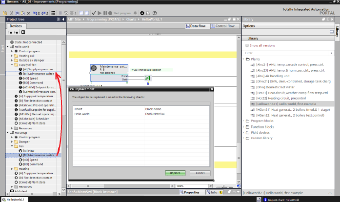

在项目树中手动替换 I/Os
您可以使用实际配置和测试的 I/Os. 来替换它们，而不是使用从库中添加的工厂的 I/Os

- Copy a new plant from the library.
- Modify the control program according to the requirements.
- Drag the actual configured and tested I/Os and drop it onto the I/Os in the list you intend to replace.
- Confirm with Replace.